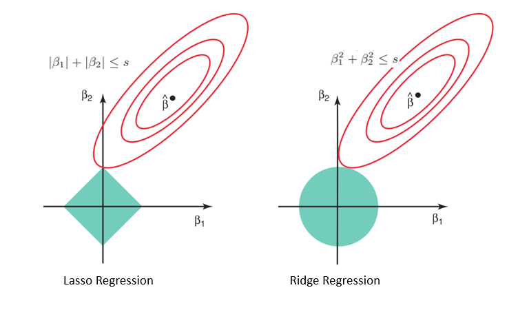

모델의 정규화란…
정규화 기법은 모델의 복잡도를 줄이고 일반화 성능을 향상시키기 위해 사용됩니다. 일반적인 정규화 기법으로는 릿지 회귀(Ridge Regression), 라쏘 회귀(Lasso Regression), 그리고 엘라스틱넷 회귀(Elastic Net Regression)가 있습니다.
- 릿지 회귀 (Ridge Regression) - L2 정규화: 릿지 회귀는 선형 회귀에 L2 정규화를 추가한 것입니다. L2 정규화는 회귀 계수의 제곱합에 비례하는 패널티를 손실 함수에 추가합니다. 이 패널티는 모델의 계수를 작게 만들어 과적합을 방지하며, 일반화 성능을 향상시킵니다. 하이퍼파라미터인 람다(lambda)는 정규화 항의 강도를 조절합니다.
- 라쏘 회귀 (Lasso Regression) - L1 정규화: 라쏘 회귀는 선형 회귀에 L1 정규화를 추가한 것입니다. L1 정규화는 회귀 계수의 절댓값의 합에 비례하는 패널티를 손실 함수에 추가합니다. 라쏘 회귀는 계수를 정확히 0으로 만들어 희소한 모델을 생성하며, 이를 통해 변수 선택이 이루어집니다. 라쏘 회귀는 릿지 회귀와 마찬가지로 람다(lambda) 하이퍼파라미터를 사용하여 정규화 항의 강도를 조절합니다.
- 엘라스틱넷 회귀 (Elastic Net Regression) - L1과 L2 정규화의 조합: 엘라스틱넷 회귀는 L1 정규화와 L2 정규화를 모두 사용하는 방법입니다. 이 방법은 라쏘 회귀의 변수 선택 기능과 릿지 회귀의 일반화 성능을 모두 활용할 수 있습니다. 엘라스틱넷 회귀에서는 람다(lambda)와 알파(alpha) 두 가지 하이퍼파라미터를 사용하여 정규화 항의 강도와 L1, L2 정규화의 비율을 조절합니다.
 [출처] Lasso and Ridge Regression in Python Tutorial | DataCamp
적절한 정규화 기법의 선택법
- 상관 관계가 높은 특성이 많은 경우: 엘라스틱넷 회귀가 더 적합한 선택일 수 있습니다. L1 정규화는 변수 선택에 도움이 되지만, 상관 관계가 높은 특성들 중 하나만 선택하고 다른 특성들을 제외할 위험이 있습니다. 이러한 경우, L1과 L2 정규화의 조합인 엘라스틱넷 회귀가 더 적절한 성능을 보일 수 있습니다.
- 특성 수가 관측치 수보다 많은 경우: 릿지 회귀가 적합한 선택일 수 있습니다. 라쏘 회귀는 최대 관측치 수만큼의 변수를 선택하므로, 이 경우에는 릿지 회귀가 더 나은 일반화 성능을 보일 수 있습니다.
- 특성 선택이 중요한 경우: 라쏘 회귀가 적합한 선택일 수 있습니다. L1 정규화는 계수를 0으로 만들어 변수 선택을 수행합니다. 이로 인해 라쏘 회귀는 상대적으로 더 간단한 모델을 만들 수 있습니다.